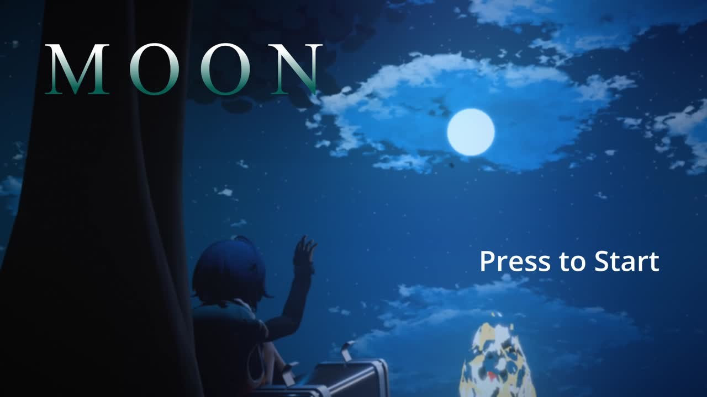
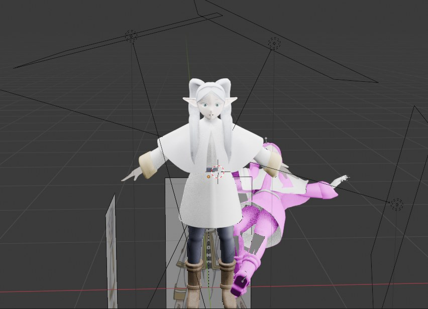
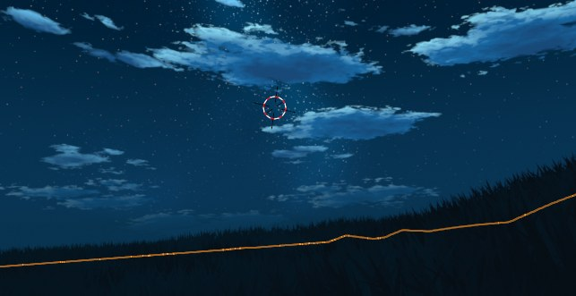
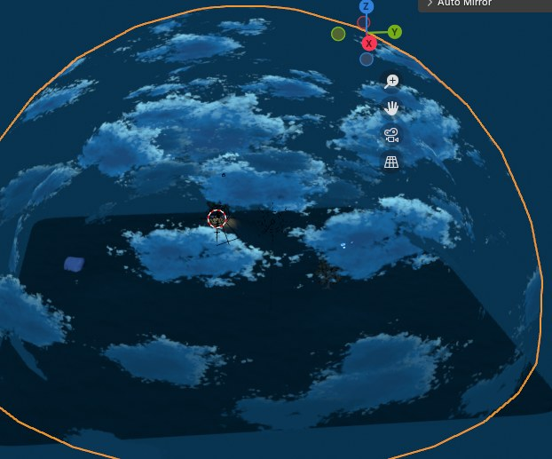
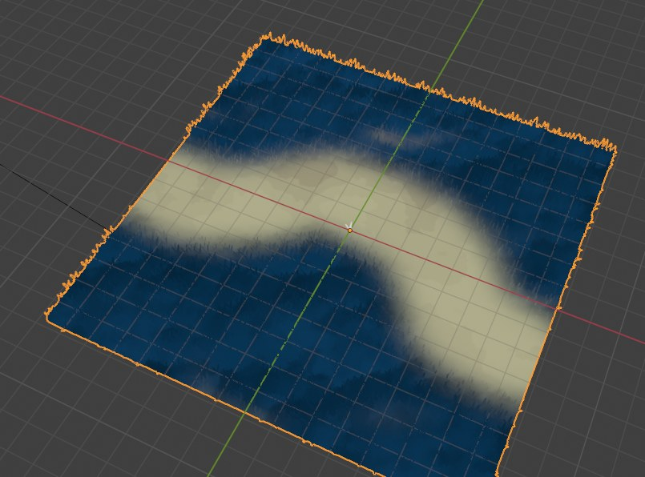
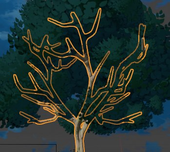

THE PROJECT
During my exchange in Münster I stepped outside my usual audio work and spent the project on 3D and technical art, all of it in Blender. The goal I set was to take a single scene from a rough idea to a finished, atmospheric game start screen called MOON: a quiet, anime-inspired moment of a character looking up at the night sky.
Almost everything in the scene is procedural, including the sky and the grass, and I composed the music that plays over the final screen. It was a chance to push my modelling and shading while still bringing my sound background into the result.
THE CHARACTER MODEL
The character is modelled in Blender, taking visual inspiration from Frieren for the silhouette, hair, and calm pose. Building a stylised anime character in 3D is a study in restraint: the shapes have to stay clean and readable so the model still reads as the character from across the scene, not just up close.

A FULLY PROCEDURAL ENVIRONMENT
The environment is built procedurally rather than hand-painted, down to the sky itself. A procedural night sky gives me clouds, stars, and a moon that I can move and re-light without repainting anything, which made it easy to chase the exact mood I wanted. Keeping it procedural also means the look stays consistent as the camera moves around the scene.


PROCEDURAL GRASS
The ground cover is procedural too. Instead of placing grass by hand, I used a procedural setup to scatter and shape it across the surface, so I could control density and flow with a few values rather than thousands of manual placements. It keeps the foreground alive without becoming a chore to author or to change later.

OTHER 3D WORK
Alongside the hero scene I modelled supporting assets to fill the world, like a stylised tree with a clean outline read that matches the anime-inspired look. Small props like this are where the scene's style gets reinforced, so the whole frame feels like it belongs together.

THE FINAL PRODUCT
Everything comes together in MOON, a game start screen where the character sits beneath the tree and reaches toward the moon. I scored it with my own music so the screen has a mood the moment it loads, the way a real title screen should pull you in before you have pressed a single button.
HOW I MADE IT
The whole scene was built in Blender, one piece at a time:
- Modelled the character in Blender, taking the silhouette, hair, and calm pose from Frieren.
- Built a procedural night sky with clouds, stars, and a moon I could move and relight without repainting anything.
- Set up procedural grass to scatter across the ground, controlled by a few values rather than manual placement.
- Modelled supporting assets, like a stylised tree with a clean outline read that matches the look.
- Composed the music so the final screen has a mood the moment it loads.
- Assembled everything into MOON, the game start screen, and rendered it out.